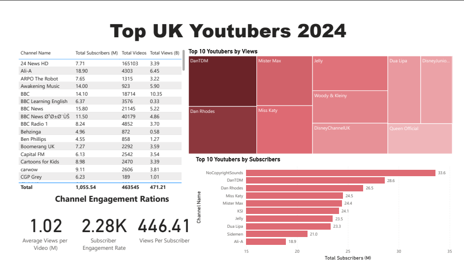

Project Overview
This project analyzes the top UK-based YouTube channels in 2024 to identify influencers for marketing campaigns. By leveraging a dataset from Kaggle, I extracted key metrics such as subscriber counts and average video views to determine the most influential YouTubers. Using Excel, SQL, and Power BI, I cleaned, processed, and visualized the data to deliver actionable insights for marketing teams aiming to maximize campaign reach and engagement.
Project Objectives
- Identify the top 10 UK YouTubers based on subscriber count.
- Analyze average views per video to evaluate audience engagement.
- Determine the most common content categories among top influencers.
- Develop an interactive Power BI dashboard to visualize channel performance.
Tools Used
- Microsoft Excel
- SQL
- Power BI
Data Source
The dataset was sourced from Kaggle: Top 1000 YouTubers. It includes details such as channel names, subscriber counts, total views, total videos, and categories for YouTubers worldwide, filtered for UK-based channels.
Steps Taken
Data Collection
Downloaded the Top 1000 YouTubers dataset from Kaggle and filtered it to include only UK-based channels for analysis.
Data Cleaning with Excel
Used Excel to remove duplicates, handle missing values, and standardize channel names and categories for consistency.
Data Analysis with SQL
Imported the cleaned dataset into a SQL database and wrote queries to calculate metrics like average views per video and identify top channels by subscribers.
Data Visualization with Power BI
Connected the SQL database to Power BI to create an interactive dashboard displaying top YouTubers, subscriber trends, and content categories.
Insights & Results
Through comprehensive analysis, I identified the top UK YouTubers in 2024, providing valuable insights for influencer marketing strategies. Key findings include:
- Top Channels by Subscribers: NoCopyrightSounds (33.6M), DanTDM (28.6M), and Dan Rhodes (26.5M) lead the UK YouTube scene.
- Content Categories: Entertainment and Music channels dominate, with 60% of top channels belonging to these categories.
- Engagement Metrics: Channels like Dan Rhodes achieve high average views per video, indicating strong audience engagement.
The Power BI dashboard below visualizes these insights, enabling marketing teams to select influencers based on subscriber reach and engagement metrics.
